This site is kept like the Sages’ working copy of the lore book. The Keepers, the elders of the Sages, write down what happens in the valley and pin notes to the board. Nothing here is final.
A sketch drawn for this site, not the game board: the real places do not sit where these do. The two labeled places are stand-in names.
The game in three lines
Two players. Nine places.2 players, ages 14 and up. Each of you leads a faction into a valley of nine places.
Two ways to winTwo ways to win, and both are always open: break the enemy Leader, or hold all 9 places at the end of a turn.
The same startEach player draws 5 opening cards, and both players start their first turn with 3 Supply.
Dustbanners is a two-player card game set on a broken frontier, about eighty years after the world fell apart. You lead a Banner into a valley of nine places. Every faction flies a banner, and in this game the side you lead is called a Banner.
A Keeper’s noteTap to readClick to read
Every banner says its colors flew first. We wrote down every story.
Sage advice
Some trail marks are meant for one banner only. Don’t follow a mark you can’t read.
How it plays
2 players, ages 14 and up.
Two ways to win, and both are always open: break the enemy Leader, or hold all 9 places at the end of a turn.
Each player draws 5 opening cards, and both players start their first turn with 3 Supply.
The Frontier Deck turns up something every turn (a storm, a wild animal, a find) that both of you have to deal with.
Two sides that play nothing alike
The first box has two factions: the Wardens and the Raiders. Each Banner has two Leaders and two Companions to choose from. More factions to come.
Wardens
“How do we protect what’s ours?”
Their word is Guard. A Guard protects your things where it stands: your Units, Companions and Leader there, and the place itself if you hold it.
Raiders
“What can we take?”
Their word is Ambush. Its card words are still being tested, so they are not shown yet.
What’s in it for you
A world that will grow. Each season will add a chapter of the story, and new cards will come from it.
The same box for everyone. No random packs. Every box has the same cards, and nothing stronger is sold later.
Tested before you play. More than 20,000 simulated games so far, computer against computer, to help balance the cards.
Made by people. The ideas and decisions are mine. Human artists will make the final art, card backs and logo, and a human editor will do the final text pass.
If you like…
Magic: The Gathering, but want fixed boxes, a simpler resource (we call it Supply), and a world whose story grows with every season.
Android: Netrunner, for two sides that play differently, no random packs, and a frontier with its own history to read.
KeyForge, for decks that are ready to play out of the box.
Marvel Champions, for fixed expansions instead of boosters, each one a new chapter of the story.
Root, for factions that feel nothing alike, each with its own people, places and sayings.
Arcs, for card-driven strategy in a world you can read as deep as you like.
Those games belong to their makers. Dustbanners is not connected to any of them.
The cards
Every card in the first box is one of these eight kinds. Here is one of each, with its real rules text. The names are
plain stand-ins for now. The final art will come from human artists.
Leader
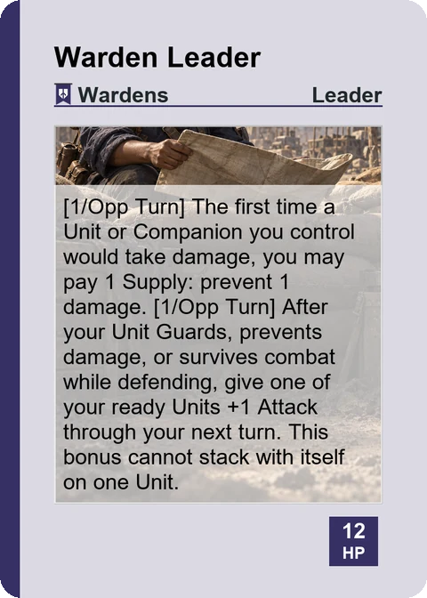
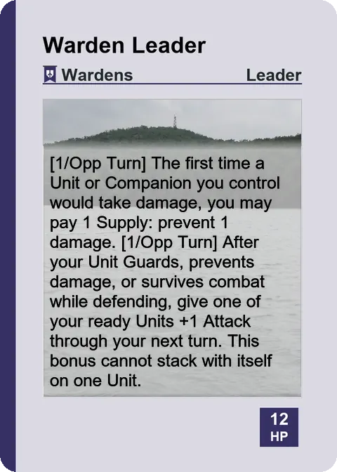
Your Leader leads your Banner. If your Leader is defeated, you lose.
Companion
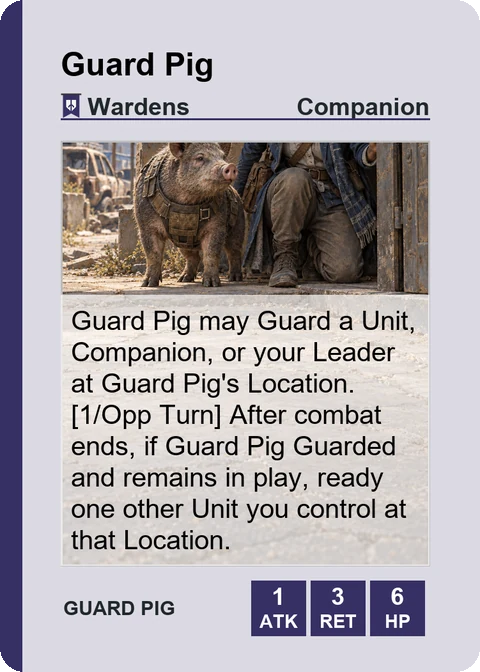
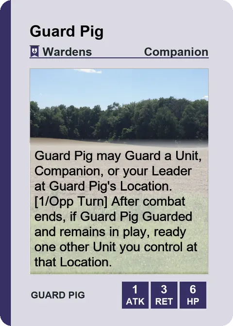
A Companion is an animal or a person who fights beside your Leader. If it is defeated, you can bring it back.
Unit
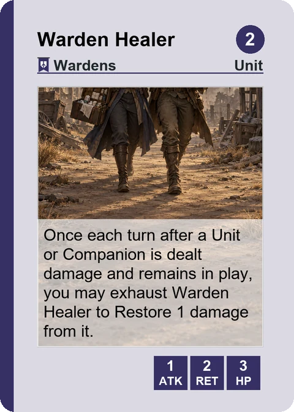
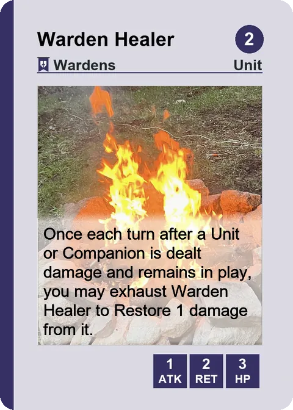
Units are your Banner’s people. They move, attack, defend and capture places.
Tactic
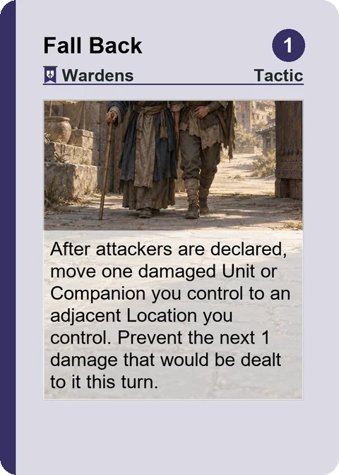
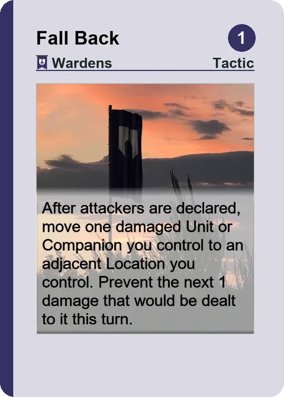
A Tactic is a one-time action. Do what it says, then put it in your discard pile, the Ditch.
Equipment
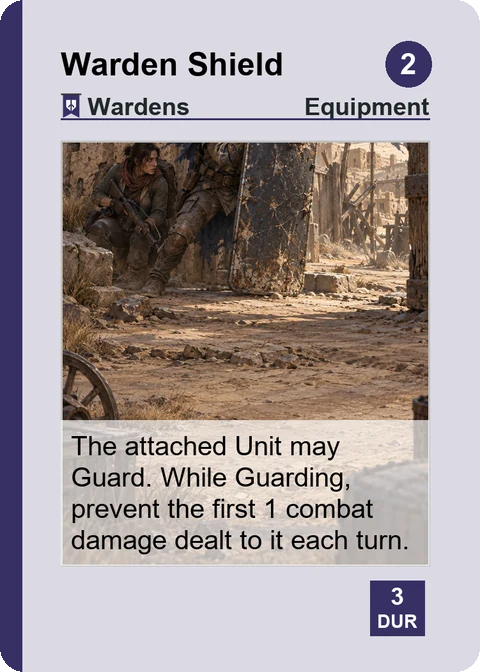
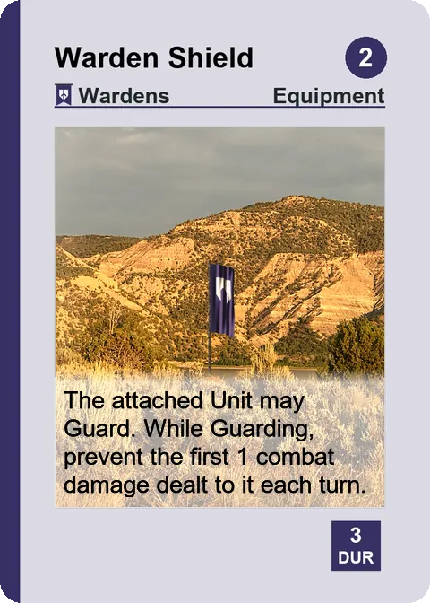
Equipment is gear. It goes on a card it names, or it sits at a place you control.
Structure
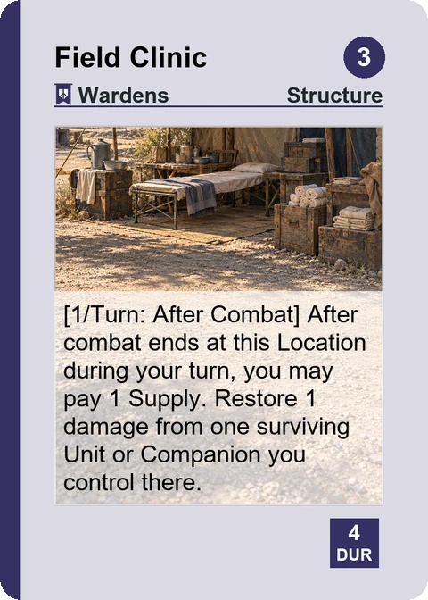
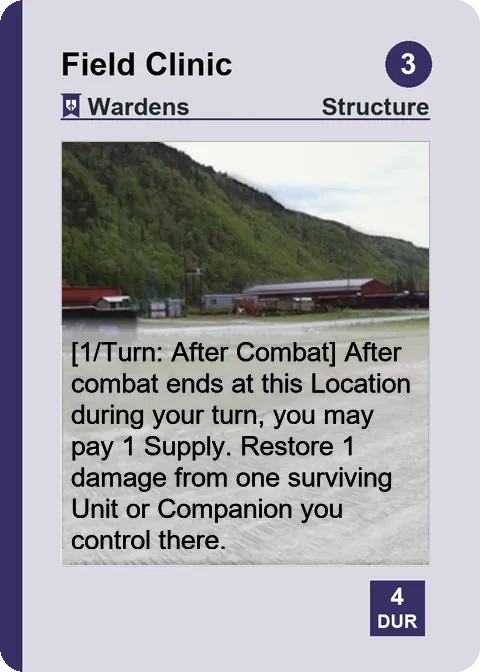
A Structure is something you build at a place you control.
Battlefield Location
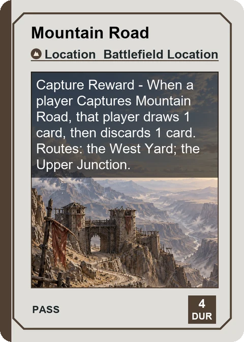
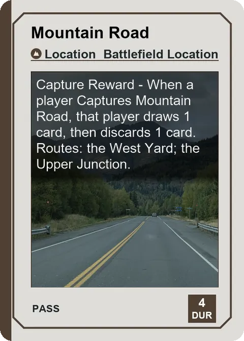
A Location is one of the nine places on the map. Hold all 9 at the end of a turn to win.
Frontier card
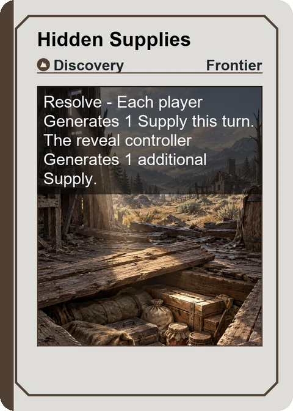
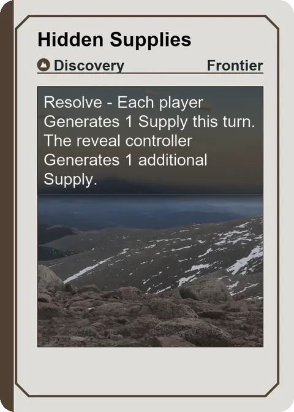
Frontier cards come from the shared deck. Storms, finds, animals and trouble happen to both of you.
A Keeper’s note
Every banner says its colors flew first. We wrote down every story.
Sage advice
Some trail marks are meant for one banner only. Don’t follow a mark you can’t read.
A Keeper’s note
Everybody wants the Valley. Nobody can keep it.
Part 2
Play It
Where each way to play stands today, and one turn you can try right here.
Where the game stands
Now: step 3 of 640% of the way to the printed game in your hands.
Version 0.6 is in testing now. Improved computer players are playing 23,800 games against each other, with more to follow. No results yet.
As of November 2026. A target, not a promise.
Try one turn
A simplified example of one turn.Your goal: get your Unit to Rusted Track and keep it there through a storm.
You: Player 2, the WardensThem: Player 1, the Raiders
Round 1Your turn
Recovery
Frontier
Draw
Operations
Conflict
End
Your depotYours
Rusted TrackOpen
The Lower JunctionTheirsEnemy Unit
Example 1 of 6 · Step 1 of 4
Unit
You have 3 Supply to spend. Supply pays for cards.
A Unit card puts one of your people on the map.
Frontier
Wall of Wind
The Frontier Deck turns up something every turn, and both players must deal with it.
A printed test copy is being made. A free print-and-play demo is coming too: two starter decks and the core rules,
ready to print at home. It is a demo, not the full game, and each sheet says so.
The demo download is not ready yet. Get email news to hear when it is.
A Keeper’s note
The wind takes no side. Plan for it anyway.
A Keeper’s note
A page you can hold is harder to lose than a story you were told.
A Keeper’s note
The map can’t see in the fog. The person who drew it can.
Part 3
Get Involved
Dustbanners is made by people, and it will need more of them. Four calls are posted here.
Call 1 · playtesters
Playtest
Every plan breaks on first contact. Help us find where.
Now: 0 recorded sessions with people we have not met.
Send feedback any time through the form. Table sessions start when the next test version is ready.
More than 20,000 simulated games so far, computer against computer. See what they show.
The road behind is somebody’s story. The road ahead is yours and mine.
A Keeper’s note
The road behind is somebody’s story. The road ahead is yours and mine.
Part 5
Join Us
Get email news
Sign up and we will email you Dustbanners news: the day the Kickstarter launches, when the free print-and-play demo is ready, and
news from playtests and the world of the game. We only send news, and we never sell your email.
You will get one email first to confirm. Every email has an unsubscribe link at the bottom: one click and you
are off the list. Read our privacy notice.
A Keeper’s noteTap to readClick to read
Leave your name here. We write when there is news, and not otherwise.
Join the Discord
The Dustbanners Discord is the main place to talk about the game.
Leave your name here. We write when there is news, and not otherwise.
Warden oath, older form
A people without a banner are just people, and people alone don’t last a season.
About
Made by people
The creator
I’m Kyle. I make games as AminalHungy, a one-person studio in Colorado. I grew up on Sierra adventures, SimCity,
Fallout and early Magic: The Gathering.
Dustbanners began on a hike in Boulder: my friend Ross and I climbed a trail, and the next morning I woke up wanting to
build the world I had seen from near the top. It is a two-player card game for people who like to plan with a deck and
then get surprised by one they can only guess.
How AI is used
The finished game will be made by people: the art by paid human artists, the final words by a paid human
editor.
I use AI tools to help make Dustbanners. The world, the rules and every final decision are mine. AI tools helped build and
test the digital version of the game, run its balance simulations, and draft some of the text, which I edit and approve. A
paid human editor will do the final pass on every word players see. This site starts with AI art off, so the card
pictures you see first are my own photos. I adjusted them with simple editing scripts. No AI image generator made or changed them. If
you switch AI art on, the cards show AI-made placeholder art instead, and each picture’s description says it is
AI-made. The final card art, box art, card backs and logo
will be made by paid human artists. AI art is used only for our own placeholders.
We have the words for these people. We do not have their faces yet.
A Keeper’s note
We have the words for these people. We do not have their faces yet.
A Keeper’s note
Drink clean water, watch the sky, and bring your people home.
Contact AminalHungy
Questions about the game, an order, or how to play? Bought it and haven’t played yet? Game feedback you’d rather
not put in a form? Email us. A real human named Kyle reads every message.